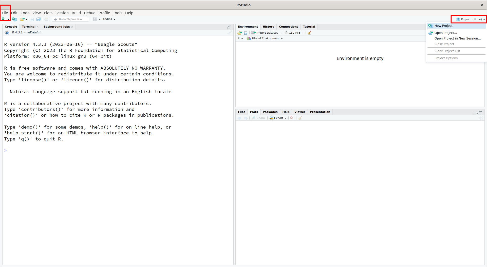

R と RStudio について
Rとは？
Rはプログラミング言語でありますが、実際はそれ以上のものです。 Rは統計計算とグラフィックスのための環境であす。
- ビッグデータの効率的な処理
- 統計解析・シミュレーション・作図
- インタプリタ型のプログラミング言
- オープンソース
- MacOS, Windows, Linux などのOSにインストールできる
- 解析の履歴が残る
RStudio とは？
RStudio はオープンソースの統合開発環境 (Integrated Development Environment; IDE) です。 RStudio は、Rをより簡単に使用するための多くの機能を備えた環境を提供しています。
RStudio を用いた基本操作
プロジェクト・ディレクトリをつくりましょう。
- RStudio を起動する
Fileメニューまたは右上にあるProjectのアイコンからNew Projectを選ぶ
New ProjectウィンドウからNew Directoryを選んで、つぎにNew Projectを選ぶ。プロジェクト名を記入して、Create Projectボタンをクリックする。
- プロジェクトが完成した後、プロジェクトが自動的に RStudio で開かない場合は、
FileメニューからOpen Projectを選択し、First_Project.Rprojを選択します。 - RStudio が開くと、ウィンドウに 3 つのパネルが表示されます。
FileメニューからNew Fileを選択し、R Scriptを選択します。FileメニューからSave As...を選択し、First_Project.Rと入力してSaveを選択します。
RStudio プロジェクト
特定のプロジェクトの分析に関連するすべてを含むディレクトリです。 RStudio のプロジェクトは、コンテキスト固有の分析に取り組んでいて、それらを別々に管理したい場合に便利です。 RStudio でプロジェクトを作成する場合、任意の作業ディレクトリ（既存のもの、または新しいもの）に関連付けます。 .RProj ファイルは、そのディレクトリ内に作成され、コマンド履歴と環境変数を記録します。 この .RProj ファイルを使用して、現在の状態でプロジェクトを開くことができます。
RStudio 内でプロジェクトを（再度）開くと、以下のアクションが実行されます：
新しい R セッション（プロセス）が開始されます。 プロジェクトのメインディレクトリの .RData ファイルがロードされ、プロジェクトがクローズされたときに存在していたオブジェクトが環境に追加されます。 プロジェクトのメインディレクトリの .Rhistory ファイルが RStudio History ペインにロードされます（コンソールの上下矢印コマンド履歴に使用されます）。 現在の作業ディレクトリがプロジェクトディレクトリに設定されます。 以前に編集したソースドキュメントがエディタタブに復元されます。 その他の RStudio 設定（アクティブなタブ、スプリッタの位置など）は、プロジェクトを最後に閉じたときの状態に復元されます。
RStudio インターフェイス
RStudio インターフェースには、4 つのメインパネルがあります：
- コンソール： コマンドを入力し、出力を見ることができます。コンソールは、RStudio を使用せずにコマンドラインで R を実行した場合に表示されます。
- スクリプトエディタ： コマンドを入力し、ファイルに保存できます。コンソールで実行するコマンドを送信することもできます。
- 環境/履歴: 環境はすべてのアクティブなオブジェクトを表示し、履歴はコンソールで実行されたすべてのコマンドを記録します。
- ファイル/プロット/パッケージ/ヘルプ
作業ディレクトリの整理と設定
作業ディレクトリの表示
作業ディレクトリを整理する前に、現在の作業ディレクトリがどこにあるか、コンソールに入力して確認してみよう：
getwd()作業ディレクトリは、プロジェクト作成時に作成した First_Project フォルダである必要があります。 作業ディレクトリは、特に指定がない限り、RStudio が自動的にファイルを探す場所であり、作成したファイルを自動的に保存する場所です。
Files/Plots/Packages/Help ウィンドウから Files タブを選択すると、作業ディレクトリを表示することができます。 もし別のディレクトリを作業ディレクトリにしたい場合は、Files タブで別のフォルダに移動し、 コグとして表示される More ドロップダウンメニューをクリックし、Set As Working Directoryを選択します。
作業ディレクトリの構造化
特定の解析のために作業ディレクトリを整理するには、元のデータ（生データ）と中間データセットを分ける必要があります。 例えば、生データを格納する data/ ディレクトリを作業ディレクトリに作成し、 中間データセットを格納する results/ ディレクトリと、 生成するプロットを格納する figures/ ディレクトリを作成します。
Files タブ内の New Folder をクリックして、作業ディレクトリ内にこれら 3 つのディレクトリを作成しよう。
完了すると、作業ディレクトリは以下のようになるはずです：
セットアップ
RStudio IDE の詳細なセットアップをします。 IDEの使い方に個人差があるが、参考にしてください。
RStudio 画面の上部にある Tools をクリックし、プルダウンメニューから Global Options ... をクリックします。
General オプションの Basic タブの設定は次のスクリーンショットのようにします。
Workspaceの自動再現と保存をしない- 最近使用したプロジェクトとファイルをスタートアップ時に開くにチェックを入れる
つぎは、Code オプションの Editing タブの設定をします。
Use native pipe operatorにチェックをいれています。Continue comment when inserting new lineにもチェック入れています。
最後に、Appearance オプションを設定します。 ここでは、RStudio のテーマや使用するフォントの種類・サイズを変えられます。
Rとの対話
IDE とディレクトリ構造を設定したので、Rを操作してみましょう。 RStudio で R と対話するには、コンソール を使用するか、スクリプトエディタ (コードを含むプレーンテキストファイル)を使用するかの2つの方法があります。
コンソール(Console)
コンソール（一般的には、左下のパネル）は、R がコマンドの実行を指示するのを待つ場所であり、コマンドの結果を表示する場所でもあります。 コンソールに直接コマンドを入力することもできますが、セッションを閉じるとコマンドは消えてしまいます。
次のコードをコンソールに記述して実行してみてください。
# 円の面積
pi * 5^2[1] 78.53982スクリプトエディター
スクリプトエディターでコマンドを入力し、スクリプトを保存するのが best practiceです。 実行中のコマンドを # を使って自由にコメントすることをお勧めします。 こうすることで、実行したことの完全な記録が残り、他の人に実行方法を簡単に示すことができ、必要であれば後でもう一度実行することができます。
Rstudio スクリプトエディターでは、スクリプトエディターの右上にある Run アイコンをクリックすることで、現在の行または現在ハイライトされているテキストを R コンソールに「送信」することができます。
それでは、スクリプトエディタ にコマンドを入力し、コメント文字 # を使って説明を追加し、テキストをハイライトして実行してみましょう。 あるいは、Ctrl キーと Return/Enter キーを同時に押すだけでもショートカットとして実行できる。 コンソールでコマンドが実行され、結果が出力されるはずだ。
# Rの紹介
# 2023年 9月 25日
# 円の面積
pi * 5^2[1] 78.53982同じコマンドをコメント記号#なしで実行したらどうなるでしょうか。 前の # 記号を削除してからコマンドを再実行してください。
円の面積Error in eval(expr, envir, enclos): object '円の面積' not foundpi * 5^2[1] 78.53982Error: object '円の面積' not found がでましたが、円の面積 というオブジェクトは存在しないと警告しています。
コンソールのコマンドプロンプト
コマンドプロンプトを解釈することで、R がいつコマンドを受け付ける準備ができているかを理解することができます。 以下に、コマンドプロンプトのさまざまな状態と、コマンドを終了する方法を示します。
- コンソールはコマンドを受け付ける準備ができています：
>
コンソールに直接コマンドを入力したり、スクリプトエディタからコマンドを実行したりすると (Ctrl-Enter)、R はそのコマンドを実行しようとします。 実行後、コンソールは結果を表示し、新しいコマンドを待つために新しい > プロンプトを表示します。
- コンソールはさらなるデータの入力を待っています：
+
Rがまだ完了していないため、さらなるデータの入力を待っている場合、 というプロンプトがコンソールに表示されます。 これはプロンプトが表示されます。 多くの場合、これは括弧や引用符を「閉じて」いないことが原因です。
最後に、RStudio でコマンドが実行されない理由がわからない場合、コンソールウィンドウをクリックして esc を押すと、コマンドをエスケープして新しいプロンプト > を表示することができます。
RStudio でのキーボードショートカット
このレッスンで説明したショートカットに加えて、RStudio で作業する際に役立つショートカットをいくつか紹介します。
| ショートカットキー | 動作 |
|---|---|
| Ctrl+Enter | スクリプトエディターからコマンドを実行する |
| ESC | コマンドプロンプトに戻るには、現在のコマンドをエスケープする |
| Ctrl+1 | コンソールからスクリプトエディターにカーソルを移動 |
| Ctrl+2 | スクリプトエディターからコンソールにカーソルを移動 |
| Tab | ファイルやコマンドのオートコンプリート |
| Ctrl+Shift+C | ハイライトされたテキストブロックをコメントにする |
| Ctrl+Shift+M | パイプ演算子を挿入する |
The R syntax
スクリプト・エディターやコンソールを使って R とのやり取りがわかったところで、R を数字の足し算以上のことに使いたい。 そのためには、R の構文についてもっと知る必要がある。
R の主な「品詞」（構文）には以下のものがある：
- コメント
# - 代入演算子
<-や= - パイプ演算子
%>%または|> - 変数 や 関数
代入演算子
R で作業したいなら、代入演算子 <- または = を使って 値を変数に代入する必要があります。 例えば、代入演算子を使って x に 3 という値を代入することができます：
x = 3
x <- 3*RStudio では、Alt + - (- キーと同時に Alt を押す。Mac では option + - と入力する。) を入力すると、<- を一度に書き込むことができます。
パイプ演算子
パイプ演算子は左辺の出力を右辺の関数の第1引数に渡すために使います。 a |> f() または a %>% f() のよう記述しますが、これは f(a) と同じです。
a = c(5,1,2,3,1,2)
a |> mean()[1] 2.333333mean(a)[1] 2.333333パイプ演算子の詳細は パイプ演算子の詳細 へ。
変数
変数は値を記録するためのものです。 値（情報）を繰り返して代入したり (assignment)、参照したり (reference) できます。
変数 y に値 5 を代入します。
y = 5変数名だけ実行すると、変数に代入した値を表示できます。
y[1] 5変数を参照することによって、記録した値を繰り返し使えます。
y + y[1] 10変数に値をを代入したら、 RStudio の Environment パネルで変数の情報を見ることもできます。
変数名や関数名の作成
変数名には、x、temperature、subject_id など、自由に名前を決めれます。 しかし、次にルールに従いましょう。
- 変数名は明確にしたほうがいいが、長すぎないように。
- 数値や記号から始める変数名は使わない (
2xよりもx2) - R の関数名を避ける（例：
if,else,for,mean,dataなど） - 変数名にはドットを例ないほうがいい。たとえば、
my.datasetよりも、my_datasetまたは、myDataset - 変数名は名詞、関数名には動詞を使いましょう
- Rは大文字と小文字を区別しています（例えば、
genome_lengthはGenome_lengthとは異なる） - コードのスタイル（空白を入れる位置、変数名の付け方など）に一貫性を持ちましょう。Rでは、Hadley Wickham のスタイルガイドとGoogleのスタイルガイドがよく使われる。